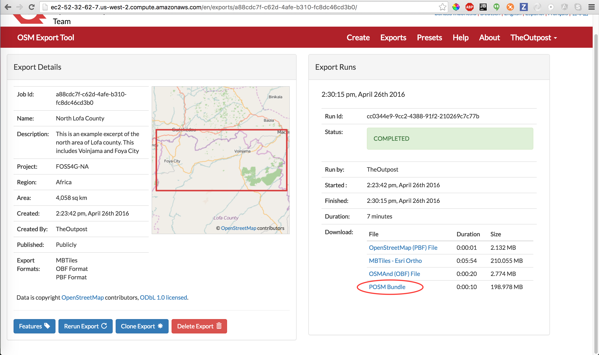

Walkthrough¶
Todo
Need to revise and add more details to this section.
This walkthrough is intended to take you through the entire process of setting up and using OpenMapKit from start to finish.
The overview of the process is:
Todo
This list should link to the sections further down the page. Numbers and title should be consistent.
- Build OpenMapKit Server
- Create and add a survey
- Use HOT Export Tool to get OSM Data - basemap & vector data (POSM Bundle)
- Deploy POSM Area of Interest with POSM Bundle
- Deploy Field Papers
- Deploy on Android
- View & Download Survey Data
- Submit to OSM API
OpenMapKit Server Production Installation¶
For an actual deployment of OpenMapKit Server, it is recommended to use posm-build to install your instance. posm-build is a lightweight shell build system used for POSM servers. OpenMapKit Server is designed to be a part of a POSM server, however, the posm-build allows you to be modular regarding what gets installed, so you can and should use it if you want to install a standalone OpenMapKit Server.
The advantage is that in a few lines, you can have OpenMapKit Server installed and integrated as an Upstart service in Ubuntu Linux. This means that if OpenMapKit Server crashes or is restarted, the API will restart automatically. Also, posm-build only gets the dependencies you need and downloads only the files you need, so the entire repo does not need to be cloned with git.
Instructions for installing OpenMapKit Server on your development environment.
Tested On¶
- Amazon EC2 Ubuntu Server 14.04 LTS
- Instance Type: t2.nano
- vCPUs: 1
- Memory: 500 MB
- Storage: 8 GB
- Open Ports: 22, 80, 3210
OpenMapKit Server is intended to be as light-weight as possible, so you don’t have to throw much hardware at it.
Steps¶
- Download and extract posm-build.
sudo -s
wget -q -O - https://github.com/AmericanRedCross/posm-build/archive/master.tar.gz | tar -zxf - -C /root --strip=2
- Create a settings.local file in /root/etc with the following content:
posm_ip="54.191.109.128"
Replace the IP address for `posm_ip` with the actual public IP or your server. If you are on Amazon, this should be your Elastic IP.
- Execute bootstrap.sh and tell it to only install NGINX and OpenMapKit Server.
/root/scripts/bootstrap.sh base virt nodejs nginx omk
Let the installation churn. That’s it!
Upstart¶
You can start / stop / restart the omk-service like any Ubuntu Upstart service.
sudo service omk-server stop
sudo service omk-server start
sudo service omk-server restart
Your Data¶
All of your data are stored in /opt/omk/OpenMapKitServer/public.
You can scp / sftp the
forms /opt/omk/OpenMapKitServer/public/forms
deployments /opt/omk/OpenMapKitServer/public/deployments
submissions /opt/omk/OpenMapKitServer/public/submissions
from the server to backup and access your data. There is no database, so all of your data are in these files.
Creating and add a survey¶
Create or Modify XLSForm using Excel¶
Creating forms for ODK or OMK can be as simple or complex as the survey itself. In most cases this step can be completed in under an hour.
Setting up the basic survey form:
Creating a drop down list of surveyor names:
Creating survey questions consistent with Open Street Map tags:
A similar example can be viewed and downloaded.
More detailed documentation for how to correctly create a survey form can be found in the Creating a surveys form section of the documentation.
Upload Survey to OpenMapKit Server¶
To use the survey you create in the field, it must be added to OpenMapKit Server. You can upload forms by using the API call
http://{your_host_url}/pages/upload-form/
OR
By opening OpenMapKit Server UI.
You will see all the forms currently on your server
OpenMapKit Server Forms
Clicking in the upper right corner will give you a drop down menu, click Upload Form to upload your survey.
Upload Form
You can drag-n-drop your form or click to select it. Then hit Submit to add your survey to your OpenMapKit Server.
HOT Export Tool - OSM Basemap & Data¶
The HOT Export Tool is used to get the larger Area of Interest data from OpenStreetMap onto the POSM. The two main components that it packages for you are 1) OSM PBF, the vector data, and 2) MBTiles, basemap tiles.
POSM itself generates tiles, called POSM Carto on the device itself, but it is often useful to have the HOT Export Tool fetch tiles for you on the internet as well–especially if you want to have a satellite basemap.
Currently, the HOT Export Tool can be reached at:
https://export.hotosm.org/en/v3/
Name and describe your export. On the right, make sure you have selected Select Export Area, and draw a bounding box to server as your Area of Interest.

Describe an Export
Choose the file formats you want. You want to at least have OSM PBF. OSMAnd OBF is a bonus, because you can load your extract in OSMAnd. If you want the export tool to generate an MBTiles basemap from the internet, check MBTiles.

File Formats
If you would like to have an MBTiles basemap fetched from the internet (optional), you need to specify the tile template URL and zoom levels to be fetched. This task by far takes the longest, and the generated MBTiles file can be huge… You can use Geofabrik’s Tile Calculator to help you determine how big your MBTiles is likely to be.

MBTiles Source URL
Finally, you need to Create Export.
Export Details
The export begins by fetching OSM data from the Overpass API. This may take a while, and if you are creating MBTiles, it may even take hours. You will be emailed when the export is complete.
Beginning of Export
Once your export is completed, right click on POSM Bundle and copy the URL.
Completed Export
POSM Area of Interest Deployment¶
The POSM needs to fetch the data generated by the HOT Export tool, load it’s databases, and setup it’s applications for the Area of Interest.
Make sure you are connected to the POSM wifi network. Then, connect to the POSM by going to:
go to POSM ADMIN.
Paste the POSM Bundle url in the text area and START.
Enter URL
When the POSM Area of Interest (AOI) Deployment is complete, you will see a check box next to the task, and the console output will say ==> tessera-fp-reset.js: END false. This means that it is finished.
Completed AOI
Now, let’s do a sanity check to see if the data has loaded correctly. Click on EDIT OPENSTREETMAP in the POSM Portal, or go to http://osm.posm.io
It may take a little while to start cutting tiles, but zoom out and zoom into the area that you loaded. You should see tiles being drawn.
POSM Carto Tiles in OpenStreetMap
Also check Field Papers.
Tiles in Field Papers
Field Papers → OpenMapKit Atlas Deployment¶
The deployments that you see in OpenMapKit are based off of the bounds of a Field Paper atlas. The entire Area of Interest is too large for the phone, so instead, our deployment is based off of a field paper atlas.
When you create a field paper, an atlas is generated, and we are using it’s slug for the name, the title for the title you gave the field paper, and the GeoJSON for drawing the bounds of each field paper page in OpenMapKit.
Components of an Atlas
This step is soon to be automated, but now we manually enter the URL to the Atlas’s GeoJSON. This data encompasses the shapes that make up both the atlas as a whole as well as each page in the atlas. It also includes necessary metadata. We are using this data to generate a deployment for OpenMapKit. The name of the deployment is the slug, and the title is the title you gave the field paper.
Pasting Atlas GeoJSON URL
POSM is generating OSM XML from the API Database, POSM Carto MBTiles, and an extract of any other MBTiles included with the AOI.
Generating Field Papers OpenMapKit Deployment
When the deployment is complete, you should see ==> gis_omk-posm-mbtiles.sh: END false.
End of Script
You should also have all of the steps checked off.
Deployment Complete
OpenMapKit Android - Download Deployment¶
Now you are read to download a deployment on your phone. You can enter the server URL to your POSM, but scanning the QR Code on a field paper will also switch you to the correct URL of the POSM server. You can also manually enter the POSM Server’s URL. It is http://posm.io
Make sure your phone is connected to the POSM wifi network.
No Server Setup Yet
The QR Code will be read, and it will bring you to the corresponding deployment.
Deployment Details
Now you can download it by pressing the button in the lower right.
Downloading
If you jump back to the previous screen, you can see the list of deployments on the POSM’s OpenMapKit Server.
List of Deployments
Once your download is complete, there will be a new button in the bottom left to Check Out your deployment. This will turn on the POSM Carto MBTiles and OSM XML on the map for you.
Download Complete
You should also see the bounds of your field paper atlas pages. The top of the map should show the page that is green below.
Field Paper with Pages
Also…
Before, you always had to start with ODK Collect. Now, if you start from OpenMapKit and try to edit a feature, the app will lead you back to ODK Collect to fill in your survey.
Notice to Launch ODK Collect
Once you’ve gotten back into OpenMapKit _from_ ODK Collect, you can edit tags as usual.
Collect Data Using Surveys¶
Start Blank form in ODK Collect¶
Todo
Put these images in this project repository (not externally linked) and update as needed.


{kind=link}
{kind=link}
{kind=link}
{kind=link}
{kind=link}
{kind=link}
{kind=link}
{kind=link}
Upload Form Data in ODK Collect App¶

Select all the forms you want or click Toggle All. When you’re read click Send Selected to upload your completed data to the server.
View Form Data on OpenMapKit Server¶
See your ODK & OSM submissions:¶
Submissions can be viewed, downloaded and submitted to OSM from OMK Server. To access submitted forms and data, first open the OMK Server UI.
Forms
Click on the the View Submissions tab of the survey you would like to view.
View Submissions
You have the options to view & download the ODK data, view & download the OSM data and the ability to submit the OSM data back to the OSM API.
Survey Metadata
If there are any conflicts that occur when submitting data back to the OSM API, the submission will fail. Conflicts will be flagged and have to be resolved manually using the POSM Changeset Replay Tool.
Resolve Conflicts with the POSM Changeset Replay Tool¶
The Changeset Replay Tool is a workflow for resolving conflicts. It uses a local Git repository containing the current state (local edits), transform it so that it contains the new desired upstream state (what OSM should look like after merging), and apply the necessary transformations (in the form of API calls) to update the upstream state.
1. Obtain AOI Extract at Branch Point¶
You should already have a copy of this file.
2. Gather Local Changesets¶
Determine the first local changeset. Assuming you have access to the local APIDB:
psql -d osm_posm -t -c "select id from changesets where num_changes > 0 order by id asc limit 1"
Gather changesets from the local OSM API into changesets/:
OSM_BASE_URL=http://localhost:3000 ./gather_changesets.sh <first changeset id>
3. Initialize the git Repository from the Branch Point¶
Filter the AOI extract according to entities referenced in local changesets:
node filter-by-use.js huaquillas-fixed.pbf posm/ changesets/*.osc
cd posm/
git init
git add .
git commit -m "Branch point"
git tag start
cd ..
4. Obtain a Current AOI Extract¶
Calculate the bounding box for all local changesets and fetch the corresponding area from Overpass, converting to PBF for good measure:
echo "(node($(node changeset-bbox.js changesets/*.xml | jq -r 'map(tostring) | [.[1], .[0], .[3], .[2]] | join(",")'));<;>>;>;);out meta;" > overpass.query
wget -O aoi.xml --post-file=overpass.query http://overpass-api.de/api/interpreter
osmconvert aoi.xml --out-pbf > aoi.pbf
5. Extract and Apply Upstream Changes¶
Filter the AOI extract according to entities referenced in local changesets and apply to a new branch. This ensures that there’s a common ancestor when moving commits between branches.
cd posm/
rm -rf *
cd ..
node filter-by-use.js aoi.pbf posm/ changesets/*.osc
cd posm/
git add .
git checkout -b osm
git commit -m "Current OSM"
git tag upstream
git gc
cd ..
6. Apply Local Changesets to the Branch Point¶
This is effectively what has already occurred through editing using the OSM API, although doing it in git terms allows us to more easily move changes between branches.
cd posm/
git checkout master
REPO=posm ./preprocess-changesets.sh changesets/
cd posm/
git gc
cd ..
7-8. Apply Local Changesets to the Upstream Version and Resolve Conflicts¶
Walk through all local changesets and apply them to the upstream branch. This will open your
configured git mergetool (opendiff / FileMerge on OS X), allowing you to resolve conflicts
manually.
TODO extract this into a script
cd posm/
git checkout osm
git tag marker start
git --no-pager log --reverse --format=%h marker..master | while read sha1; do
git cherry-pick $sha1
echo Applying $sha1
if [ -f .git/CHERRY_PICK_HEAD ]; then
# remove files that were deleted by us (as we no longer refer to them and
# will submit the deletions as "if-unused")
git status --porcelain | grep ^UD | cut -d " " -f 2 | xargs git rm
# remove files that were deleted upstream
git status --porcelain | grep ^DU | cut -d " " -f 2 | xargs git rm
# data available to the mergetool:
# * OSM version
# * our version
# * current version of OSM refs (via API) -- (we don't know the version ref'd)
# * current version of our refs (via API, if POSM is available) -- (we don't know the version ref'd)
# In other words, we can show node movements, tag and ref/membership changes
# but not way/relation composition (visually)
# TODO sometimes this fails, in which case marker will have already been set to $sha1
git mergetool -y --no-prompt
git clean -f
git add */
git commit --allow-empty -C $sha1
fi
# remove temporary files
git clean -f
# update the marker
git tag -f marker $sha1
done
9. Submit Resolved Changesets Upstream¶
Create a new branch for changesets that have been applied upstream and walk through all local changesets, submitting them and renumbering (remapping entity IDs and references) as necessary.
cd posm/
git checkout -b applied upstream
../submit-all.sh
ID remapping information will be left behind in .git/map.json (cumulative) and .git/<commit>.json (per-changeset).
To track the number of pending changesets, count the number of commits between the upstream marker and the tip of the osm branch:
watch "git --no-pager log --reverse --format=%h upstream..osm | wc -l"
The Git repository we produced includes all of the history and context used for reconciliation. Once synchronization has been completed, its primary purpose is as an artifact of the merge process. Rather than partially applying upstream changes to POSM’s database, it’s much easier to replace all of the data with a new extract.